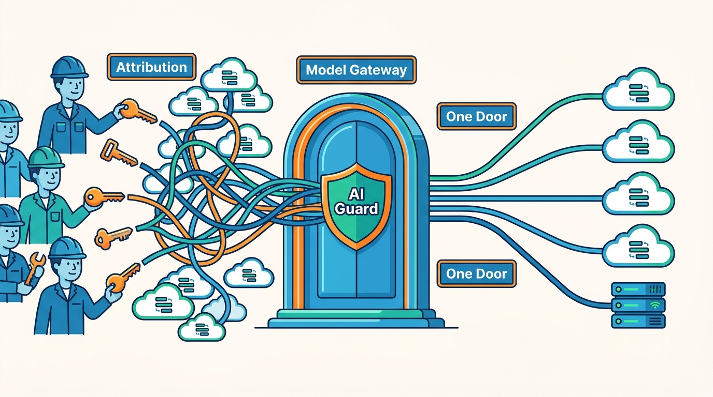

Part II — GATEWAYS: Agnostic Building Blocks
One Door for Every Model: The Model Gateway and AI Guard

Image generated by Google Gemini (gemini-3-pro-image-preview)
Part II — GATEWAYS: Agnostic Building Blocks

Image generated by Google Gemini (gemini-3-pro-image-preview)